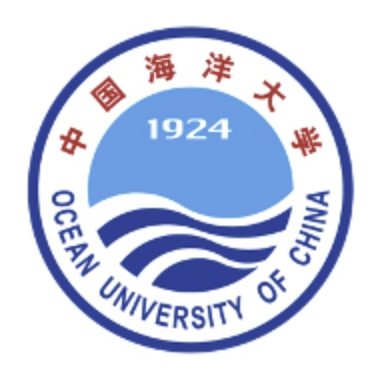
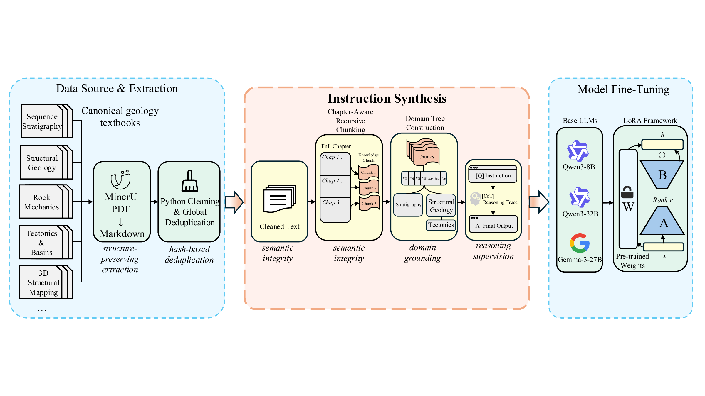
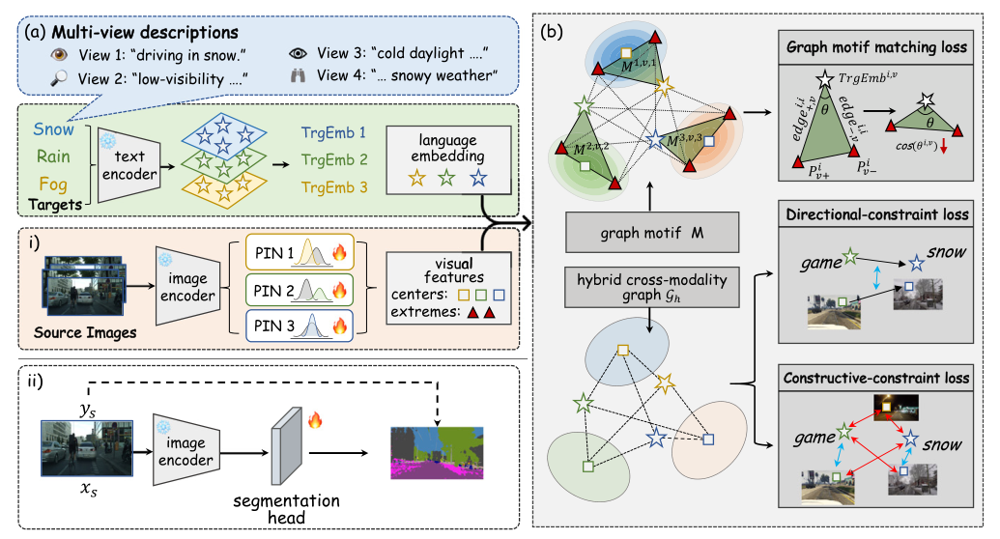

Research Intern
Sep 2026 – PresentInstitute for Interdisciplinary Information Sciences, Tsinghua University
Advisor: Mengdi Xu
Homepage
Undergraduate Student, Ocean University of China
Research Intern, Institute for Interdisciplinary Information Sciences, Tsinghua University
Nice to meet you👋 I am a second-year undergraduate student in Computational Physics at Ocean University of China. My research interests include Embodied AI, VLM, World Model, and domain-specific large language models. My goal is to build comprehensive spatial intelligence that enables AI to perceive, reason about, and act in the physical world.
Institute for Interdisciplinary Information Sciences, Tsinghua University
Advisor: Mengdi Xu

We introduce SIGHT (Spatial Inference through Generative Hypothesis Testing), a training-free test-time framework that treats world-model-assisted spatial reasoning as active hypothesis testing. SIGHT converts answer choices into falsifiable hypotheses and selects camera probes predicted to distinguish them.
Under Review
We present Geo-Expert, a parameter-efficient geological LLM framework, and establish Geo-Eval, a benchmark for geological reasoning.
Accepted Paper ↗Motif-based reasoning enhances test-time adaptation by integrating semantic and structural information for robust out-of-distribution and cross-domain generalization.
Under Review
This work studies semantic-guided domain adaptive semantic segmentation through cross-modality motif matching.
Accepted Paper ↗GPA: 3.937 / 4.00 · Average score: 95.480 / 100 · Rank: 3